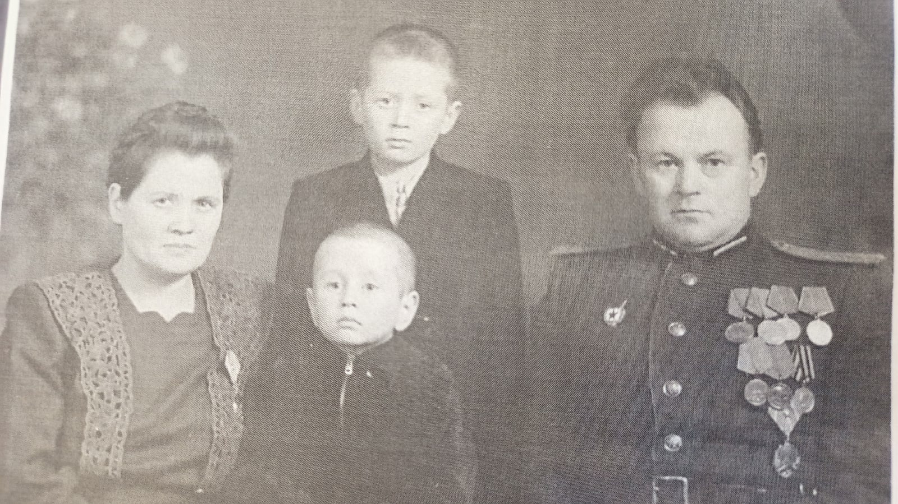
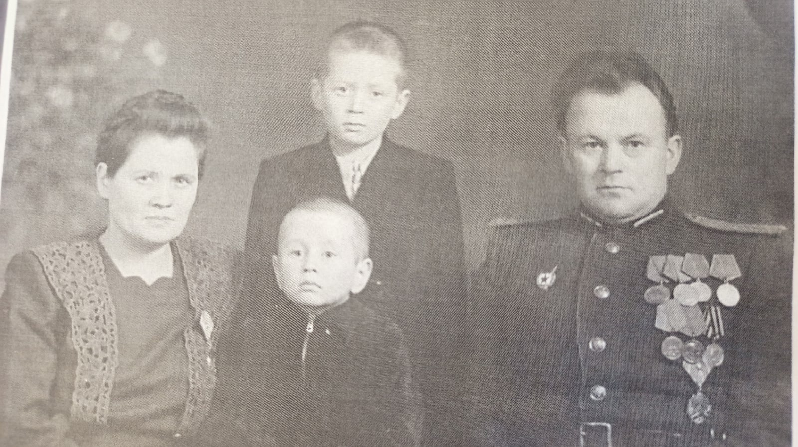

Воевал на Ленинградском фронте. Был капитаном медицинской службы. Спасал жизни солдат,
учавствовавших в освобождении Ленинграда от блокады. Имел правительственные награды: ордена и медали.
Многочисленное количество раз сдавал кровь для пораненных. За это ему присвоено звание “Почетный донор
СССР”. По окончании войны был направлен на службу в качестве военврача в Германию, а затем в Китай. В
последствии был откомандирован в Беларусь, где остался работать в районной поликлинике. Шулепова Анна
Яковлевна (прабабушка) во время войны была директором детского дома.